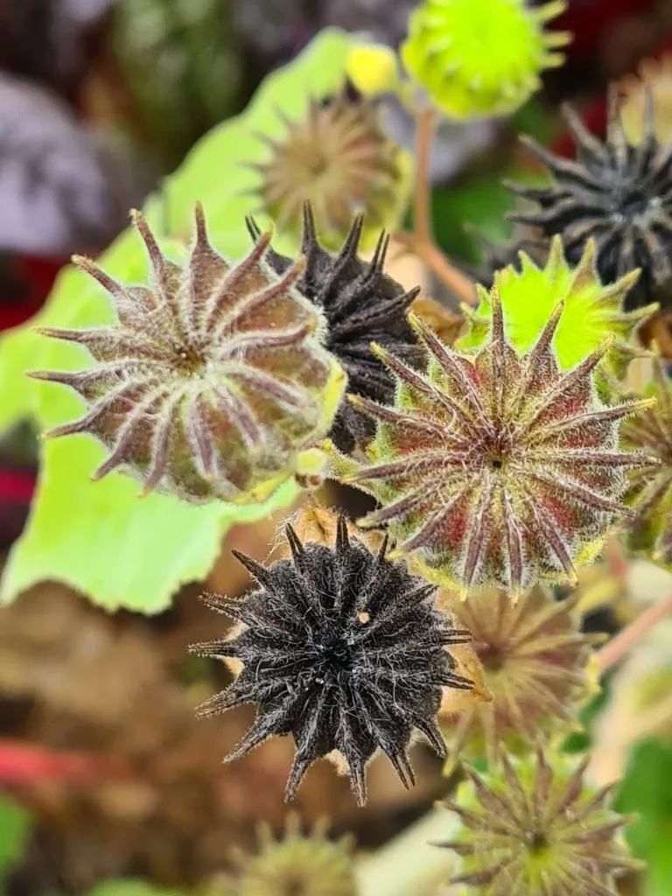

农作物与经济植物 · 植物界
青麻 Abutilon theophrasti

青麻是锦葵科一年生草本，茎皮纤维可制绳索和麻袋，种子可入药，是传统纤维作物，也常被视为田间杂草。
- 分类
- 门被子植物门纲双子叶植物纲目锦葵目科锦葵科属苘麻属
- 栖息环境
- 田边、路旁与荒地，喜温暖湿润
- 地理分布
- 原产中国与印度，中国东北、华北及长江流域常见
- 保护级别
- 暂无评估（栽培作物）
物种志
青麻是锦葵科一年生草本，株高 1–2 m，茎直立，密生短柔毛。叶片心形，大而柔软，边缘有细齿，叶柄长。花黄色，单生于叶腋，花瓣五枚。果实为蒴果，半球形，由多个分果片组成，成熟后分裂，种子肾形，黑褐色。
青麻原产中国和印度，栽培历史悠久，曾是重要的纤维作物。它喜温暖湿润、光照充足，适应性强，常生于田边、路旁和荒地。茎皮纤维洁白、柔韧，可制绳索、麻袋和包装布；种子可入药，称“苘麻子”。由于适应性强、繁殖快，青麻在农田中也常被视为杂草。中国东北、华北和长江流域有分布，纤维也可用于造纸和编织，花期夏季，果期秋季，种子可榨油。
形态与习性
- 株高1–2 m，一年生草本
- 叶心形，密生柔毛
- 花黄色，单生叶腋
- 果实半球形蒴果
- 纤维洁白柔韧，可制绳索
- 用途麻袋、绳索与药用
趣味知识
- 青麻的茎皮纤维可制麻袋和绳索，曾是重要纤维作物。
- 青麻种子入药称“苘麻子”。
- 青麻适应性强，在农田中常被视为杂草。